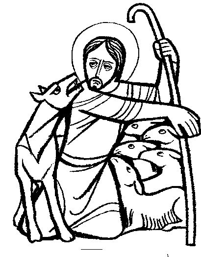
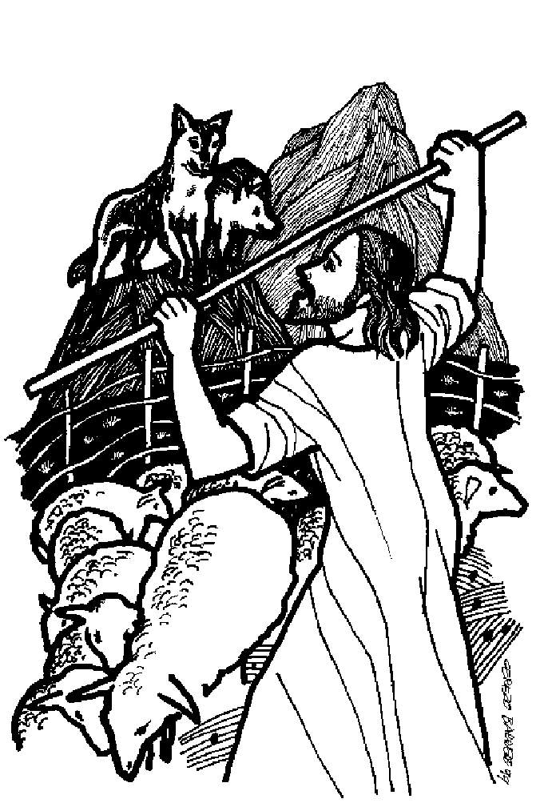

This week's lessons: Acts 4:5-12, Psalm 23, 1 John 3:16-24, John 10:11-18

MISIONEROS DEL SAGRADO CORAZÓNEN EL PERÚ
Cerezo Barredo's weekly gospel illustration.
Next Week: Acts 8:26-40, Psalm 22:25-31, 1 John 4:7-21, John 15:1-8